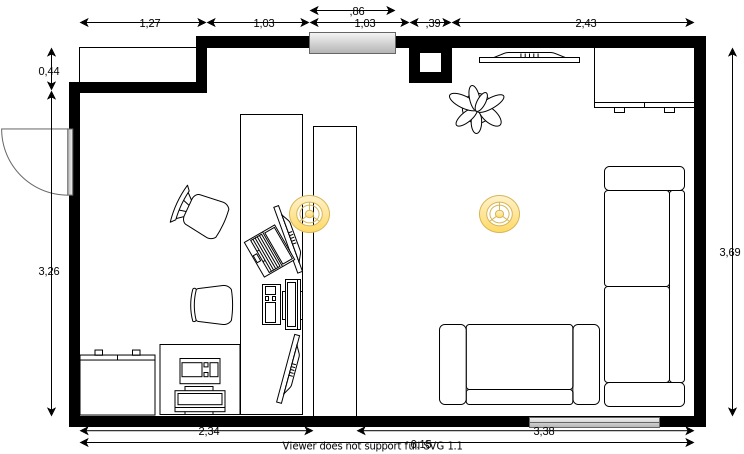
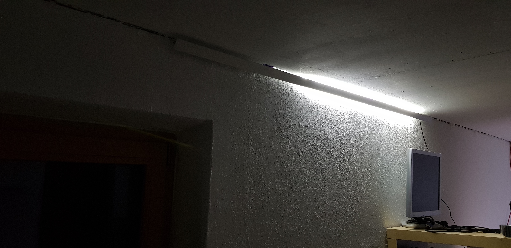
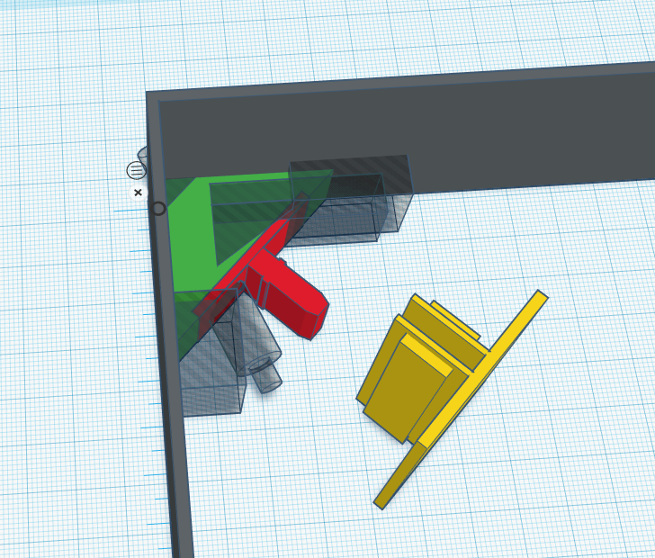
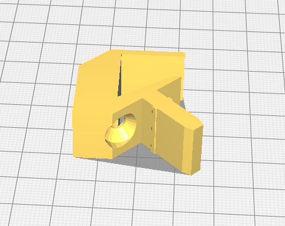
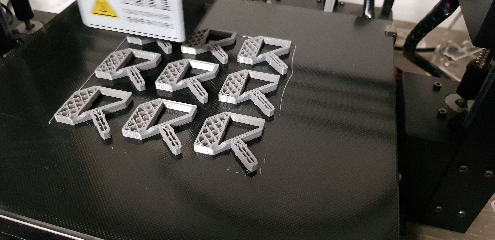
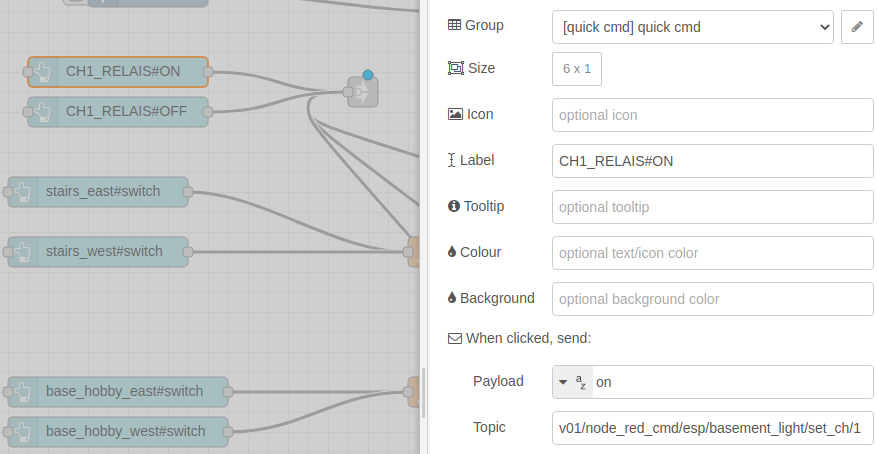

Light control office/wellness-area¶
The idea¶
Install indirect lighting in a large basement room.

The room is divided into a working and a wellness-area.
Each area should be indirectly illuminated in the wall/ceiling corners through led stripes.
Components¶
-
Paulmann Duo Profil 2m (70267)
-
Self-printed corner profile holder
-
NodeMCU as mqtt gateway
-
4x 5V relays to controll the power supplys
-
4x 24V LED power supply
-
LED Stripes white, warm white, and blue
-
Cabel 2x0,75mm²
The first prototype¶
To find out what it might look like and check if the self-printed corner profile holders work.

Room with LED planning¶
-
The ceiling of both areas should be illuminated with neutral white light
-
In the wellness area the walls should be illuminated with a warm white light
-
and in the office the wall light should be blue
-
Vertical lighting is installed in selected corners and passages

Led Stripe¶
For the ceiling I have selected a Stripe with white and warm-white LEDs:
-
240 SMD LEDs / meter
-
Chipsatz 2216
-
Power per meter: 19,2 Watt (7,9 W / Chip)
-
Light flux: 1680 Lumen/m
Length calculation LED-stripes¶
Distance profile to wall ~2cm
Led stripe separable every 5cm
| Area | calculation | Alu profile |
|---|---|---|
| Office ceiling_up | 5,22m + 7,3m | 12,52m |
| Office ceiling_down | 5,22m + 3,65m | 8,87m |
| wellness-area ceiling_up | 6,92m + 7,3m + 1,32m | 14,22m |
| wellness-area ceiling_down | 6,92m + 3,65m + 1,32m | 10,57 |
| both wall | 0,65m x 6 | 4m |
Length calculation power¶
The longest supply line is about 6,5 meters.
In total (16m office + 28m wellness-area about = 44m

Since there are long distances we use 24V.
Assumption the wellness-area white leds have 19,2 watt per meter: 19,2w * 15m = ~300 watt total.
The power supply is divided between two cables = ~150 watt.
With a cable cross section of 1.00mm² this leads to ~5% voltage drop (which is okay).
Power supply¶
-
Power per meter: 19,2 Watt (for ceiling_up and wall)
-
Wall Stripe = 65cm ~12,5 Watt
| Area | Direction | Length LED | Length cable | Watt | Ampere |
|---|---|---|---|---|---|
| Office | ceiling_up | 12,5m | 2x4m | 240w | 10 |
| Office | ceiling_down | 8,85m | 2x4m | (170w) | |
| wellness-area | ceiling_up | 14,2m | 2x7m | 273w | 11,34 |
| wellness-area | ceiling_down | 10,5m | 2x7m | (201w) | |
| both-areas | wall | 7,8 | 150w | 6,25 |
Component corner profile holder¶
To design the aluminium profile mounting I used tinkercad.
It is for free, runs in browser and is easy to use.

Requirements:
-
Compatible with Paulmann Duo Profil 2m (70267)
-
Fits for Plasterboard screws 3.9 X 45mm
-
Should act as cable fixation
If you want to download the stl file klick here

Now the slicing. There I used Ultimaker Cura with the following parameters:
- Infill Density: 40%
- Printing Temperature: 200C
- Build Plate Temperature: 60C
- Print Speed: 60mm/s
- Support: No
The series production has started.

Component Node MCU¶
As basis for the sketch I used the iot_multisensor.
The biggest difference is that the light control also controls outputs.
Hardware settings¶
const int RELAYS1 = D2;
const int RELAYS2 = D3;
const int RELAYS3 = D8;
const int RELAYS4 = D7;
void setup_sensor(){
pinMode(RELAYS1, OUTPUT);
...
digitalWrite(RELAYS1, HIGH);
...
}
Now we can control the relays with the digitalWrite() function.
// activate
digitalWrite(RELAYS1, LOW)
// and to disable again
digitalWrite(RELAYS1, HIGH)
Pinout¶
NodeMCU
| GPIO | device | GPIO | device |
|---|---|---|---|
| A0 | D0 | ||
| G | D1 | ||
| VV | [red] 5V out | D2 | [green] CH1 |
| S3 | D3 | [orange] CH2 | |
| S2 | D4 | ||
| S1 | 3V | ||
| SC | G | [blue] GND | |
| S0 | D5 | ||
| SK | D6 | ||
| G | D7 | [brown] CH4 | |
| 3V | D8 | [yellow] CH3 | |
| EN | RX | ||
| RST | TX | ||
| G | G | ||
| VIN | 3V | ||
| - | === | === | - |
4-Relais Modul 5V
| GND | IN1 | IN2 | IN3 | IN4 | VCC |
|---|---|---|---|---|---|
| blue | green | orange | yellow | brown | red |
MQTT interface¶
To control the relays from remote we use a new /set_ch/ endpoint.
v01/esp/basement_light/set_ch/ + <RELAYS>
void setDefaultTopics(){
topic_sub_set_ch = default_prefix + esp_name + "/set_ch/#";
}
client.subscribe(topic_sub_set_ch.c_str());
The callback function gets expanded
void mqtt_callback(char* topic, byte* payload, unsigned int length) {
String topic_set_ch = default_prefix + esp_name + "/set_ch/";
if(t == topic_set_ch + "1"){
set_ch(t, (char*)payload);
}
}
void set_ch(String t, String p){
if (p == "on") {digitalWrite(RELAYS1, LOW); sendResponse("set_ch1: on"); }
else if (p == "off") {digitalWrite(RELAYS1, HIGH); sendResponse("set_ch1: off");}
else sendResponse("set_out ERROR: " + p);
}
Set RELAYS from NodeRed¶
Internaly at NodeRed the following topic is used:
v01/node_red_cmd/esp/<ESP_NAME>/set_ch/<RELAYS>
- ESP_NAME example: control_light
- RELAYS: 1, 2, 3, 4
Payload: on, off, switch
This code is added to the rule engine function
if(t.startsWith('v01/node_red_cmd')){
...
if(t.startsWith('v01/node_red_cmd/esp/set_ch')){
mqtt_msg.push({ topic: t.replace("/node_red_cmd", ""), payload: p });
}
...
}
Now the relays can be set by this mqtt message:
-
topic
v01/node_red_cmd/esp/basement_light/set_ch/1 -
payload
offoron
